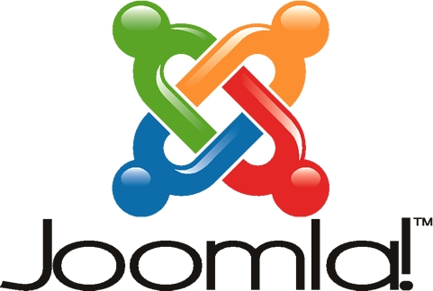

TaiwanJoomla 社群聚會暨 1.5 中文版本上市活動

Joomla! 官方在 2008 年 1 月底正式發佈開發二年多的 1.5 正式版本，1.5 版本是更安全、功能更強大先進的網站系統，完全可以符合 Web 2.0 網站的需求 。此次的年度北、中、南社群聚會活動，除了回顧 2007 年社群的活動及系統的推廣，會中將討論台灣以及所有中文社群的發展，另外最熱門的主題是為 1.5 中文版本的上市揭幕。目前聚會時間已經確定！不過場地的部份還在協調各地方的活動負責人員。時間都在週末下午 2:00-5:00
議程如下：
1. Joomla! 1.5 中文版本上市發表活動：
Joomla! 1.5 操作介面及功能介紹（講者：Jeff）
Joomla! 1.5 開發程式框架及AJAX應用介紹（講者：Eddy）
Joomla! 繁簡體中文化及文件翻譯標準 + 小組成員現場招募（講者：Eddy & Dofi & Jeff）
2. TaiwanJoomla 2008 年活動及社群發展討論會 （主持人：Eddy）
3. 其它議題及交流
- 主辦單位：TaiwanJoomla
- 協辦單位：中研院資訊所 自由軟體鑄造場
戰國策
智邦
正漢科技
如梭資安
LinuxPilot - 活動連絡人：Eddy Chang (eddy @joomla.org.tw)
- 詳細活動內容：https://www.joomla.org.tw